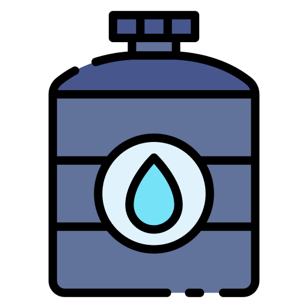

Quiniela Yoyo [Copa America 2024]
A dynamic website, developed using PHP code and hosted online through ngrok software, facilitates user engagement. Upon signing up, users can seamlessly navigate to the "Play" section from the home site, enabling them to submit their results effortlessly.

Calculating Points
This platform calculates points comparing the results that users entered with the actual results that the games end with. Depending on each fase, players will earn points according to the following scheme which is also available in the website itself in the [Rules] section
Profiles
Upon registration, users gain access to a personalized profile, showcasing their match results and accrued points. Additionally, users have the option to designate a favorite team, prominently displayed for others viewing their profile.
Quiniela World Cup 2022
A Python script has been developed to systematically compute points derived from user-submitted results stored in an Excel spreadsheet. These points are subsequently compared against the actual results, allowing for a comprehensive analysis of participant performance and determining the current standings in the bet.
Output
The script generates an Excel sheet containing a positional table that delineates the participants based on their accumulated points, ultimately determining the current leader in the bet.
Eden's Garden
An automated plant watering system is implemented through a Python script operating on a Raspberry Pi, seamlessly connected to a cloud server. This configuration enables the system to efficiently respond to user commands while ensuring optimal plant hydration.
Water Tank
A sensor relays timely information to the user, providing the current water tank state expressed as a percentage to indicate its current level of fullness.
Moisture
The system is equipped with a moisture sensor designed to transmit real-time soil moisture levels, prompting users to irrigate their plants when the soil reaches a critically low moisture level.
Pictures
Users have the ability to initiate a system request for capturing images of their plants, allowing for visual assessment and proactive measures to safeguard against potential harm.
G-Jet
An engaging single-player platform video game crafted with Unity, featuring an immersive experience across five distinct levels, ensuring a delightful and entertaining gameplay.
Controls
The game's controls are adaptable, accommodating input from either a PC keyboard or a connected controller, providing users with flexibility and choice in their preferred input method.
Design
A pixel art composition, drawing inspiration from the aesthetics of Sunny Land, has been reconceptualized to evoke a beachy atmosphere.